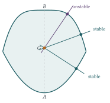

STEP III 2025, Question 9
Read the question before you go on. It is in the STEP III paper in OCR’s download of the 2025 STEP papers (a zip file): www.ocr.org.uk/Images/750486-2025-past-papers.zip
The hook
Put a rugby ball on a table and it settles on its side; stand it on its end and, with great care, it balances there too, but the slightest nudge topples it. Every rigid body resting on a table has a set of equilibrium positions, some stable and some unstable, and which ones exist depends only on its shape and its centre of mass. How many can a body have? How few?
This question builds a solid, shaped like a spinning top with a domed upper half and a pointed lower half, and shows that besides resting upright or upside down it can rest at three different tilts. The key idea is a single geometric condition: a body rests on a point of its surface exactly when the normal to the surface at that point passes through the centre of mass. Behind it lies a recent discovery: a convex shape, the Gömböc, with only one stable and one unstable position.
Before you start
A solid rests on a table, touching at a single point \(X\) of its curved surface. The forces on it are its weight (acting at the centre of mass \(G\)) and the reaction at \(X\). When are these in equilibrium?
The table is tangent to the surface at \(X\), and the reaction acts at \(X\), perpendicular to the table: along the normal to the surface. The weight acts vertically through \(G\). Two forces balance only if they act along the same line, so the vertical through \(X\), which is the normal at \(X\), must pass through \(G\). So: the body can rest touching at \(X\) exactly when the normal at \(X\) passes through \(G\).
Working it through
Stage 1 The centre of mass
Slice the solid into thin cylindrical shells of radius \(x\), thickness \(\delta x\) and height \(y\). What is the volume of a shell, and where is its centre of mass?
With \(y = \frac{r^n - x^n}{r^{n-1}}\), a shell has volume \(2\pi xy\,\delta x\) and its centre of mass at height \(\frac y2\). So \[V = \int_0^r 2\pi xy\,\mathrm{d}x = \frac{2\pi}{r^{n-1}}\Bigl(\frac{r^{n+2}}{2} - \frac{r^{n+2}}{n + 2}\Bigr) = \frac{n\pi r^3}{n + 2},\] and the moment about the base is \[\begin{aligned} \int_0^r 2\pi x\cdot\frac{y^2}{2}\,\mathrm{d}x &= \frac{\pi}{r^{2n-2}}\int_0^r x(r^n - x^n)^2\,\mathrm{d}x \\ &= \pi r^4\Bigl(\frac12 - \frac{2}{n + 2} + \frac{1}{2n + 2}\Bigr) = \frac{n^2\pi r^4}{2(n + 1)(n + 2)}. \end{aligned}\] (The bracket simplifies because \((n + 1)(n + 2) - 4(n + 1) + (n + 2) = n^2\).) Dividing, \[\bar y = \frac{nr}{2(n + 1)}. \qed\] For \(n = 2\) (a paraboloid) this is \(\frac r3\), the familiar result; as \(n \to \infty\) the solid becomes a cylinder and \(\bar y \to \frac r2\).
Stage 2 Where normals meet the axis
The gradient of the curve at \(x = rp\) is \(-\frac{nx^{n-1}}{r^{n-1}} = -np^{n-1}\), so the normal has gradient \(\frac{1}{np^{n-1}}\). Moving along the normal from \(\bigl(rp, r(1 - p^n)\bigr)\) to the \(y\)-axis, \(x\) decreases by \(rp\) and \(y\) by \(\frac{rp}{np^{n-1}} = \frac{r}{np^{n-2}}\). So \[Y = r\Bigl(1 - p^n - \frac{1}{np^{n-2}}\Bigr). \qed\]
For \(n = 4\), \(Y = r\bigl(1 - p^4 - \frac{1}{4p^2}\bigr)\). Where is it greatest? What happens as \(p \to 0\), and at \(p = 1\)?
\(\frac{\mathrm{d}Y}{\mathrm{d}p} = r\bigl(-4p^3 + \frac{1}{2p^3}\bigr) = 0\) when \(p^6 = \frac18\), that is \(p^2 = \frac12\). Then \(Y = r\bigl(1 - \frac14 - \frac12\bigr) = \frac14r\).■
As \(p \to 0\), \(Y \to -\infty\) (near the top the dome is very flat, and its normals are almost vertical, meeting the axis far below); at \(p = 1\), \(Y = -\frac14r\). So as \(p\) runs from \(0\) to \(1\), \(Y\) rises from \(-\infty\) to \(\frac14r\) and falls back to \(-\frac14r\).
Stage 3 The spinning top
The solid in part (iii) is a dome (\(n = 4\)) on top of an upside-down paraboloid (\(n = 2\)). Where is its centre of mass?
From Stage 1, the dome has volume \(\frac{2\pi r^3}{3}\) and centre of mass at \(\frac{2r}{5}\); the paraboloid has volume \(\frac{\pi r^3}{2}\) and, being upside down, centre of mass at \(-\frac r3\). So \[\bar y = \frac{\frac23\cdot\frac25 - \frac12\cdot\frac13}{\frac23 + \frac12}\,r = \frac{\frac{4}{15} - \frac16}{\frac76}\,r = \frac{3r}{35}.\] \(G\) is at \(\bigl(0, \frac{3r}{35}\bigr)\), slightly above the widest point.
Stage 4 Counting equilibria
A tilted equilibrium needs a point (not \(A\) or \(B\)) whose normal passes through \(G\). On each part of the surface, how many points have normals meeting the axis at height \(\frac{3r}{35}\)?
The dome. Its normals meet the axis at heights \(Y\) which rise from \(-\infty\) to \(\frac14r\) and fall to \(-\frac14r\). Since \(-\frac14r < \frac{3r}{35} < \frac14r\), by the intermediate value theorem the value \(\frac{3r}{35}\) is taken once on the rising part and once on the falling part: two points.
The pointed base. By part (ii) with \(n = 2\), reflected in the \(x\)-axis, the normal at the point with parameter \(p\) meets the axis at \(-r\bigl(1 - p^2 - \frac12\bigr) = r\bigl(p^2 - \frac12\bigr)\), which increases from \(-\frac12r\) to \(\frac12r\). It equals \(\frac{3r}{35}\) exactly once, at \(p^2 = \frac{41}{70}\).
Each of these three points gives an equilibrium, and the three normals make different angles with the axis, so \(\overrightarrow{AB}\) makes three different non-zero angles with the vertical (Figure 11.8.1).■

Looking back
Turn a physical condition into geometry. Equilibrium became “the normal passes through \(G\)”.
Existence without solving. We never found the angles. The intermediate value theorem, with the shape of the function \(Y(p)\), showed how many there are.
Reuse a general result. Part (ii) for general \(n\) handled both pieces of the surface in part (iii).
What’s really going on
Equilibria as critical points
When the solid rests on the point \(X\), the height of \(G\) above the table is the distance from \(G\) to the tangent plane at \(X\), which for a convex body is \(|GX|\) when \(GX\) is along the normal. In general, the equilibria are the critical points of the distance from \(G\) to the surface: a point \(X\) where \(|GX|\) is stationary is exactly a point whose normal passes through \(G\). Stable equilibria are local minima of this distance (\(G\) as low as possible), and unstable ones are local maxima or saddle points.
Going round the cross-section from \(A\) to \(B\), the distance from \(G\) is: large at \(A\) (a maximum: balanced on its point, unstable), smaller at the tilted point on the base (a minimum, stable), larger at the rim, smaller at the lower tilted point of the dome (stable), larger at the upper one (unstable), and smaller at \(B\) (stable: resting on the top of the dome). Minima and maxima must alternate, as the figure shows. (In fact there is one more equilibrium that the question does not count: the solid can balance, unstably, on its sharp rim, where the surface has no single normal.)
The Gömböc
How few equilibria can a convex body have? Any body has at least one stable and one unstable position: the nearest and furthest points of the surface from \(G\). A two-dimensional convex shape of uniform density always has at least four (two minima and two maxima of distance, alternating). In 1995 Vladimir Arnold asked whether a three-dimensional convex body of uniform density could have just two: one stable, one unstable. In 2006 Gábor Domokos and Péter Várkonyi constructed one, the Gömböc: put it down in any position, and it rolls and rocks until it reaches its single stable position. Domokos later noticed that some tortoises have shells close to this shape, which helps them right themselves when turned over.
The study of the stability of bodies goes back to Archimedes, who in On Floating Bodies analysed when a floating paraboloid (a model of a ship’s hull) is stable upright and when it capsizes, in terms of its shape and density. His answer, worked out with geometry alone, involves exactly the kind of centre-of-mass and normal calculations used here. Naval architects still use his ideas, in the form of the metacentre: a ship is stable if the point where the vertical through the centre of buoyancy meets the ship’s axis lies above the centre of mass.
The thinking skill
Equilibria are the stationary points of potential energy, and stable equilibria are its minima. Count stationary points instead of solving for them.
Here the potential energy was proportional to the height of \(G\), the distance from \(G\) to the surface. At university this viewpoint runs through mechanics, chemistry (molecules settle into minima of energy) and topology, where Morse theory shows that the numbers of minima, maxima and saddles of any function on a surface are constrained by the surface’s shape.
Try this next
A self-righting toy. Try STEP II 1996, Question 9: when does a cone on a hemisphere right itself? (Hint: where must \(G\) be relative to the centre of the hemisphere?)
A sphere. For a uniform solid sphere, every normal passes through the centre. What does that say about its equilibria? What if the sphere’s centre of mass is displaced slightly from its centre?
An ellipse. Show that an elliptical disc rolling in its own plane on a line has exactly four equilibria, and identify which are stable.
Two paraboloids. Replace the dome in part (iii) by a paraboloid \(ry = r^2 - x^2\), so that the solid is symmetric about the \(x\)-axis. Show that \(G\) is at the origin, find the tilted equilibria, and explain why they come in pairs with equal tilts.
Further reading
Péter Várkonyi & Gábor Domokos, “Static equilibria of rigid bodies: dice, pebbles, and the Poincaré–Hopf theorem”, Journal of Nonlinear Science 16 (2006). The Gömböc paper.
Daniel Kleppner & Robert Kolenkow, An Introduction to Mechanics (Cambridge University Press), on equilibrium and stability.
Chris Rorres, “Completing Book II of Archimedes’s On Floating Bodies”, Mathematical Intelligencer 26 (2004). Archimedes’ stability analysis, with modern pictures.